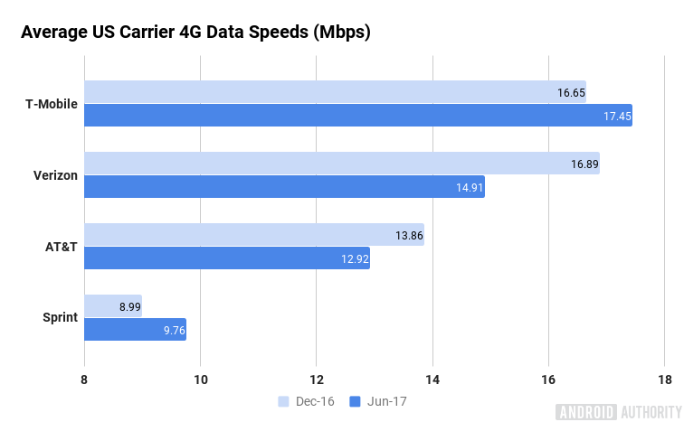

The mobile Internet refers to browser-based Internet
services accessed from handheld mobile
devices, such as smartphones or feature phones, through a mobile or other wireless network.
The Mobile Web has also been called Web 3.0, drawing parallels to the changes users were experiencing as Web 2.0 websites proliferated.
Profile
It's still part of the internet.
Traditionally, the World Wide Web has been accessed via fixed-line services on laptops and desktop computers.
However, the Web is now more accessible by portable and wireless devices.
And mobile web or so-called mobile internet (known as ‘移动互联’in Chinese)
refers to access to the Internet via a cellular telephone service provider.
Wi-Fi and other better methods are commonly seen as part of the mobile internet,
but this is not the meaning of "mobile" here.
It is wireless access that can handoff to another radio tower while it is moving across the service area,
such as using your cellular data to browse a web page while sitting on a bus.
How's it doing now?
If you are willing to explore the full history or development of mobile internet, I’ve had some useful stuffs for you.
But for many of you who are just trying to figure out what it means, the above info is quite enough.
Mobile internet has also been called Web 3.0, mainly due to its ability to have an “on the go” internet access,
but problems may be encountered include the higher cost, the screen size (often too small),
and those broken or compressed pages that frustrate users. But optimizing and new standards are bringing things a lot better.
The emerge of Google’s amp to accelerate the web loading speed, and web service providers’ struggles
(such as AT&T, Verizon and T-mobile in U.S. and China’s China Mobile, China Telecom, China Unicom) are helping to maximize
the upload and download speed. Also, HTML and CSS designers are making the web page we see more responsive than ever.
As a blogger puts it, We are drawn closer and closer to the mature of Web 3.0.
It's shaping the following generations
Mobile internet is the important game-changer considering the amazingly great number of mobile users,
many of whom have regarded mobiles as necessities.
Mobile web provides users a greater sense of privacy and personality
and connects customers with companies or shop-owners directly and precisely. With all those services on-line within easy reach,
the frequent users, especially those younger generations, are more and more at ease with speaking out their demands and pursuing
the best service or goods available (rather than make do with the second best). Social network develops with unprecedented speed
thanks to mobile web, people shares any bits of emotions and thoughts whenever they want, and can get responses almost instantly,
thus a growing tendency of self-expression or even self-deprecating (in Chinese ‘自黑’) can be seen.
We can safely assume that generations growing under the influence of the more-powerful-than-ever social network may
view themselves and the relationship around them in quite different ways, and this shall be the subject studied by sociologists
and psychologists now and future.
Access to mobile internet
...in daily life
There are several options today for going online with your laptop or cell phone while on the go.
These mobile Internet access options range from using free wi-fi at a hotspot to having a mobile broadband (e.g., 3G) network device
on your laptop or buying a mobile hotspot device for "anywhere, anytime" Internet access over a cellular network.
Long text alert!
Wi-Fi Hotspots"free"
These are public locations (airports, hotels, coffeeshops) where you can connect your smartphone or laptop
wirelessly to the establishment's Internet service.
Pros: many hotspots are free, you can find them fairly easily in urban and suburban areas, and food and drinks are often available for purchase
Cons: Can be costly even if it's free (you should buy the establishment's coffee/food/etc. That's rule #3 in The Starbuckian Handbook)
Wi-Fi hotspots are also usually unsecured (no WPA encryption),
and to use the hotspot you have to locate it first, then physically be within range of the hotspot's access point.
Internet cafes or Cybercafes
Internet cafes rent out computer workstations and sometimes also provide wi-fi Internet access.
Pros: You don't need to tote a laptop with you, the cafe may have printers/scanners available,
and you can often also buy food or drinks
Cons: Fewer locations than wi-fi hotspots, can get expensive if you need to work on them for long periods of time,
may be prone to viruses/other security issues
Tethering
On some cellular networks you can use your cell phone as a modem for your laptop to go online.
Pros: Go online anywhere you have a cellular signal, more secure web surfing than sending data over a public open wireless hotspot,
depending on your cell phone provider you may not have to pay any extra fees
(besides the cell phone's data plan)
Cons: Reception can be spotty in some areas or conditions,
slowest speed of these options, not allowed by some carriers and/or you may be charged extra for tethering
Mobile Broadband (3G or 4G)"most expensive"
Using a built-in mobile broadband card or a USB modem on your laptop or portable mobile hotspot device,
you can get high speed wireless Internet on your laptop wherever you go.
Pros: Go online anywhere you have a cellular signal, speeds comparable to residential DSL
Cons: Reception can be spotty in some areas or conditions, usually metered or capped at 5GB per month of data
Although 4G is always claimed as a lot faster than its predecessor,it's speed is still
not as good as normal WIFI nowadays.
As we can see in the graph below, the average 4g speed is no more than 20Mbps, which might even suffer
from the rolling out of unlimited-data package.

To the contrary, the 50Mbps or 100Mbps networks are getting popular, the
tech Giant Google has even rolled out Google Fiber , which claims an insainly 1 Gbit/s internet speed.
So maybe the hope lies in 5G, which, according to the NMNA:
In addition to providing simply faster speeds, they predict that 5G networks also will need to meet new use cases,
such as the Internet of Things (internet connected devices),
as well as broadcast-like services and lifeline communication in times of natural disaster.